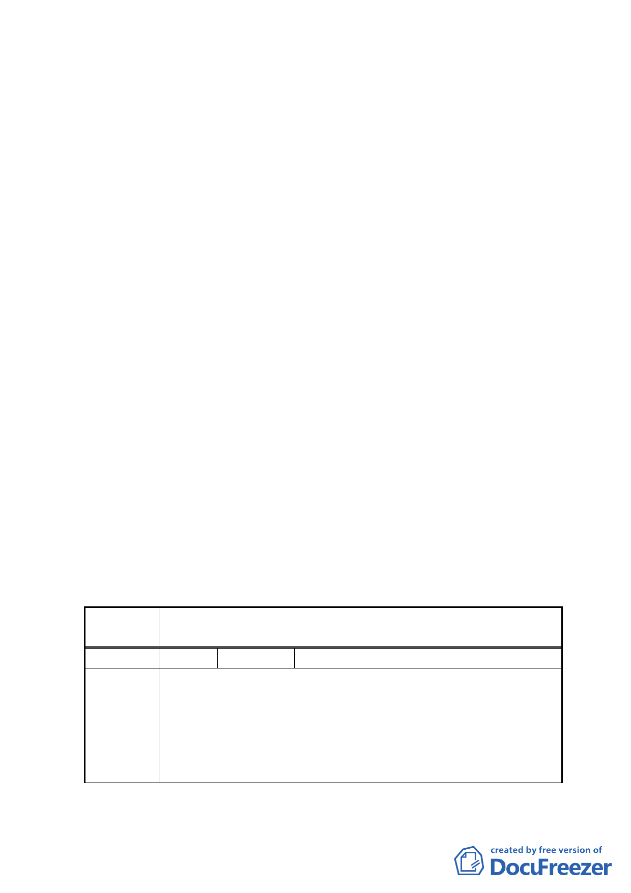

「準則」。
（二）計畫書第 31 頁（四）第 1 點有關地下開挖率規定，請予刪
除，依現行市府通案處理原則辦理。
（三）計畫書「其他」項內增列「所申請之容積獎勵面積後續於
完成都市設計審議核備及領取建築執照後不得任意變更設
計，如後續確有需要辦理變更設計者，則該部分獎勵面積
須重新審查，若已完成超過部分之獎勵容積樓地板施工
者，則不予核發該部分之使用執照」等文字敘述，以為周
延。
二、本案計畫範圍以及臺北好好看申請案範圍均已有變動，惟依
臺北好好看申請單位合作金庫說明，好好看申請案變動後範
圍內權屬仍均為合作金庫所有；同時市府說明本案另劃定更
新地區，係為促進好好看申請案周邊地區整體環境改善，且
亦為地區里長暨居民之陳情訴求。故同意市府及好好看申請
單位建議，將好好看申請案範圍內權屬資料，併同地區民眾
陳情劃定更新地區相關協調會議紀錄列為計畫書附件，並免
再辦理公開展覽及舉行說明會。
三、公民或團體所提意見審決如後附綜理表。
臺北市都市計畫委員會 公民或團體陳情意見綜理表
案名
變更復興北路與長安東路口東北側第三種住宅區為第三種住
宅區（特）細部計畫案
編號
1 陳情人 吳英辰
本人所有台北市松山區敦化段 2 小段 443、443-1、443-2、173-3
共 4 筆土地，係屬深度不足之畸零地，鄰地 449-3 地號土地雖
陳情理由
已分割留設 449-5 地號土地，供未來與本基地合併使用，但依
台北市畸零地使用規則第 4 條規定：「建築基地寬度……。但
最大深度不得超過規定深度之 2 倍半」。本人 4 筆土地基地之
最大深度已超過規定深度 2 倍半，仍為畸零地。
- 74 -